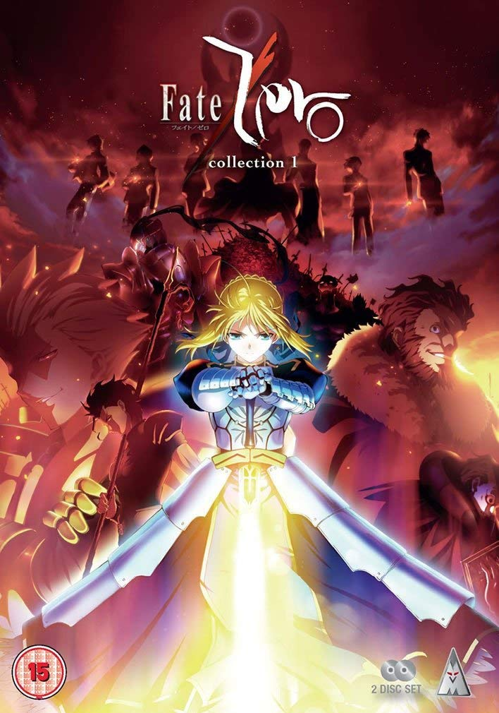

Anime
1. CLANNAD / CLANNAD AFTER
高校3年生の岡崎朋也は校門までの坂道を見上げてため息をつく。学校生活を楽しむこともできず、校内では浮いた存在になっていたが、朋也の前に、同じように坂道を見上げる少女の姿があった。「この学校は好きですか」 これが朋也と渚の出会いだった。
人・町・家族をテーマに物語が展開されていくが、そのあまりの完成度に『CLANNADは人生』という言葉が生まれるほどの名作（なので、個人的にNHKで放送して欲しい）。アニメといったものに偏見がある人にも、是非これだけは見て欲しいと思ってしまうぐらいの作品(だと思っている)。
2. STEINS;GATE / STEINS;GATE 0
舞台は2010年夏の秋葉原。厨二病から抜け出せない大学生である岡部倫太郎は｢未来ガジェット研究所｣を立ち上げ、用途不明の発明品を日々生み出していた。だがある日、偶然にも過去へとメールが送れる｢タイムマシン｣を作り出し、興味本位で過去への干渉を繰り返す。その結果、世界を巻き込む大きな悲劇が、岡部たちに訪れることになる。
初めてこのアニメを見た時、岡部の中二病があまりに酷く嫌気がさしたが、回を追うごとに、悲惨な未来に何度でも立ち向かう岡部の姿にかっこいいと思ってしまった。そして、タイムリープを話の軸に据えた世界観は驚くほど見事で、個人的にはCLANNADと甲乙付けがたい作品。

願いが叶うとされる『聖杯』を求め、各キャラクターが戦闘を繰り広げるが、その舞台に登場する英霊たち（ギルガメッシュ・アーサー王・アレキサンダー王etc）は史実にもとづく人物である。そんな過去から蘇った英霊たちが発する一言一句と己の誇りを賭けた戦いはまさに必見もの。
3. Fate/Zero
これは始まり（ゼロ）に至る物語―。奇跡を叶える『聖杯』の力を追い求め、七人の魔術師が七人の英霊を召喚し、最後の一人になるまで戦いを繰り広げる究極の決闘劇…聖杯戦争。決着を先送りにされたその闘争に、今また四度目の火蓋が切って落とされる。
願いが叶うとされる『聖杯』を求め、各キャラクターが戦闘を繰り広げるが、その舞台に登場する英霊たち（ギルガメッシュ・アーサー王・アレキサンダー王etc）は史実にもとづく人物である。そんな過去から蘇った英霊たちが発する一言一句と己の誇りを賭けた戦いはまさに必見もの。
4. 化物語 / 物語シリーズ
同級生である戦場ヶ原ひたぎの抱える秘密を知った阿良々木暦。そして問題解決のために協力を申し出る暦。実は暦もひたぎ同様、人に言えない秘密を隠していたのだった。それをきっかけに暦は、怪異に出遭った少女たちを助けるために次々と奔走することになる。
人間が怪異に取り憑かれた世界を描いた作品だが、主人公・阿良々木暦が出会う仲間・怪異・敵は何とも個性的で、ストーリーもどんどん続きが気になってしまう。物語シリーズは、化物語から始まり、偽物語・猫物語・終物語と多種多様なシリーズを取り揃えているが、どれも面白い。
5. 刀語
刀を使わない剣術・虚刀流の七代目当主・鑢七花は姉と一緒に地図にも載らない無人島で暮らしていた。そこへある時、とがめという女性が訪ねてくるが、彼女の目的は、伝説の刀鍛冶が人生をかけて完成させた十二本の完成形変体刀の蒐集を鑢七実に依頼する事だった。
３に挙げた物語シリーズと作者は一緒だが、ストーリーはまた異なる。各々の剣士たちが、剣を奪いかかる鑢七実に完成形変体刀という特殊な剣で向かい打つ姿はHUNTER × HUNTERの念能力を想起させる。鑢七花ととがめの関係にも最後の最後まで目が離せない。
6. 未来日記
｢未来の出来事が書かれた携帯日記=未来日記｣の所有者間で繰り広げられる殺人ゲーム。勝てばこの世界を支配する神になれる。そんなゲームに中学生の主人公天野雪輝が巻き込まれ、雪輝を盲目的に愛する最強のヒロイン我妻由乃と一緒に、12人の未来日記所有者とバトルを繰り広げる。
未来日記はいわゆる知能ゲーム。参加者はゲームマスターから特殊な携帯日記を渡され、あの手この手で日記保有者を襲いにかかる。グロテスクな描写が多々あるものの、ゲームに勝つためあらゆる手段を駆使してプレイヤーを倒すための戦略は予想以上に面白い。
7. Charlotte
思春期の少年少女のごく一部に発症する特殊能力。人知れずにその能力を駆使する主人公の乙坂有宇は、突如目の前に現れる少女、友利奈緒との出会いにより特殊能力が暴かれてしまうが・・・。
Charlotteは、超能力を駆使した学園物語。彼ら能力者の能力は一見羨ましいように見えるが、その裏には何とも言えない結末が待ち受けている。能力系の話が好きな方にはオススメのアニメ。
8. 凪の明日から
その昔、人間は皆、海に住んでいた。でも、陸に憧れた人たちは海を捨てた。海で暮らす人、陸で暮らす人、住む場所が分かれ、考え方は相容れずとも、わずかながらも交流は続き時は流れた。海底にある海村で暮らす先島 光、向井戸まなか、比良平ちさき、伊佐木 要と地上に暮らす木原 紡。今まで出会うことのなかった彼らが出会った時、潮の満ち引きのように彼らの心も揺れ動く。ちょっと不思議な世界で繰り広げられる少年少女たちの青の御伽話。
海の人間と陸の人間。住む場所が変われば考え方も相異なる…そんな世界を彼ら少年少女が変えていく姿に心が動かされる。
9. 東京マグニチュード8.0
舞台は東京。中学1年生の未来と弟の悠貴は、ロボット展を見にお台場まで来ていたが、その時、突然マグニチュード８.０の大地震が東京に襲いかかる。果たして二人は無事世田谷にある自宅に帰ることができるのか。
「東京マグニチュード８.０」はあくまで設定上の話だが、その内容は何ともリアルで、被災した時の状況や心境についていろいろと考えさせてくれる作品。そして家族愛に気づかされる。
10. Angel Beats!
舞台は死後の世界。なんらかの理由で最後を遂げた少年音無は、理不尽な人生を強いた神に対して復讐する少年少女とそのリーダーゆりに出会う。音無は、彼らと共に神と戦う道を選ぶことにしたのだが…。
この作品、初回から数話までは正直ストーリー展開についていけなかったが、回を追うにつれて、各々のキャラクターが過ごしてきた環境やなぜ理不尽な死を迎えたかについてわかってくる。その描写力は何とも繊細で、視聴者を泣かせるストーリー。OPの「My Soul, Your Beats!」は名曲。
11. のんのんびより
全校生徒たった5人の旭丘分校の山里でまったり過ごす少女たち。山菜を採ったり、お花見したり、お魚も釣ってみちゃったり・・・。そんな穏やかで何気ないけれど、笑えて、ほろっと心があたたかくなるやさしい時間が再びはじまります。
のんのんびよりは、淡々と彼女たちの日常をただ描くストーリーだが、見てると気持ちがほわっと和んでくる。こんな田舎に住みたい...。
12. 四月は君の嘘
母の死をきっかけにピアノが弾けなくなった天才少年・有馬公生。モノクロームだった彼の日常は、一人のヴァイオリニストとの出会いから色付き始める。傍若無人、喧嘩上等、でも個性あふれる演奏家・宮園かをり少女に魅せられた公生は、自分の足で14歳の今を走り始める。
マンガ版でも非常に面白いが、音楽を舞台に描かれた作品なので、アニメだと一層その重厚感が増す。天才少年・有馬公生と演奏家・宮園かをり、彼らの音楽に魅了され音楽の世界に引き込まれた彼らの演奏も素晴らしい。ピアノを勉強したくなる。
13. 四畳半神話体系
「大学三回生の春までの二年間、実益のあることなど何一つ していないことを断言しておこう」 〝薔薇色のキャンパスライフ〟を夢見る、誇り高き三回生の「私」。しかし現実はほど遠く、実り少ない二年間が過ぎようとしていた。悪友の小津には振り回され、謎の自由人・樋口師匠には無理な要求をされ、孤高の乙女・明石さんとは、なかなかお近づきになれない。 いっそのこと、ぴかぴかの一回生に戻って大学生活をやり直したい！
個性際立つキャラクター小津・明石さん・そして私を中心に展開される学園物語。ドタバタしつつも、こんな学生生活を送っていたら、とてもいい思い出になっただろうなあと思ってしまう。あの頃に戻りたい…。
14. とある魔術の禁書目録
総人口230万人の約8割が学生という『学園都市』と呼ばれる場所で、住民である生徒達は超能力を開発する特殊なカリキュラムが組まれていた。その生徒の一人である高校生、上条当麻の評価は落第寸前の無能力(レベル0)。なぜなら彼の右手には、“異能の力ならなんでも打ち消す”謎の力が宿っていたからだ。そして彼はこの右手のおかげで、“神のご加護”まで打ち消し、常に不幸な人生を送っていた。そんなある日、上条の部屋に純白のシスターがいきなり空から降ってきた。そして、その少女はこう言った。自分は“魔術”の世界から逃げてきた──と。
超能力系アニメはアニメ界に数多あるが、この作品はその中でもかなりの一押し。見てると学園都市に住みたくなってくる。
15. ひぐらしのなく頃に
昭和58年初夏。都会から山奥の寒村・雛見沢に引っ越してきた圭一は、学校のクラスメートであるレナや魅音、沙都子、梨花といった面々と楽しい日常を過ごしていた。そんな中、圭一は毎年6月に行われる祭「綿流し」の日に連続怪死事件が起きていることを知る。その日を境に、圭一の周りが少しづつ変わり始める…。
ひぐらしのなく頃には、いわゆるホラーアニメ。その描写力は映画・貞子や呪怨に劣らないと言える程スリル満載。アニメだと各キャラクターの個性が溢れるので、その意味だと映画のホラー映画より見ていて面白いと思う。